Jujutsu VCS
The newer, better and shinier Git
The plan
4 exercises (+1)
interspersed between
9 sections
What is
Jujutsu?
What is Jujutsu VCS?
"Just imagine: what if you were always in the middle of an interactive rebase, but this was actually a good thing?"
What is Jujutsu VCS?
- A Git-compatible distributed VCS
- Created by Martin von Zweigbergk
- Created as a hobby project and "20% project""
- Now his full-time job, with "ongoing support from Google"
- Mostly used by individuals, but some widespread adoption inside Google
What is Jujutsu VCS?
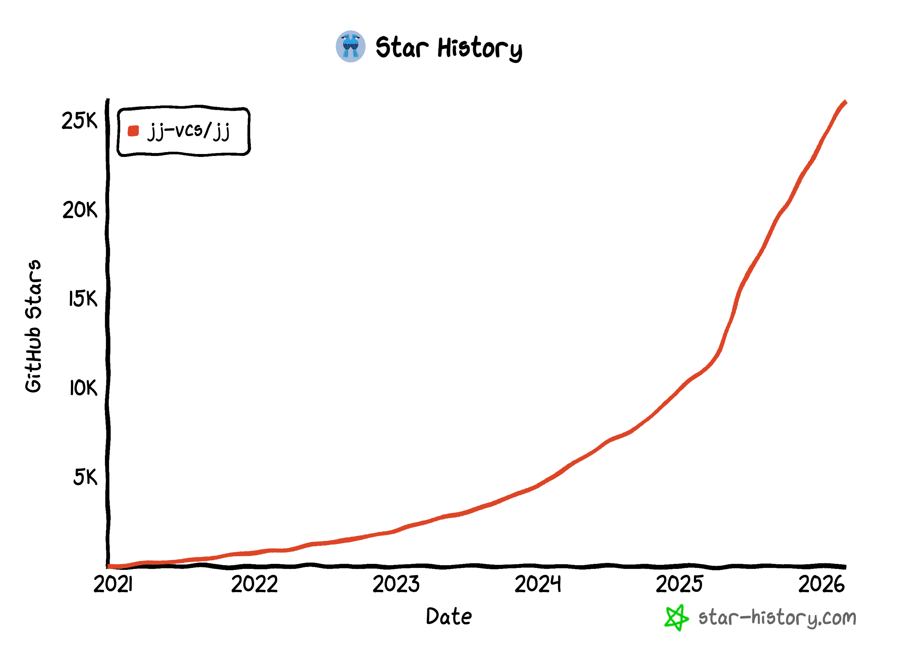
Key differences from Git
Working-copy-as-a-commit:
Records changes to files automatically as normal commits, and amends on every subsequent edit
Automatic rebase:
Rebases all descendants of the current commit after edits
Operation log & robust undo:
Snapshots every operation performed on the repository
Rush-free conflict resolution:
Conflicts can be left hanging around for as long as you like
(that's a good thing...)
If in doubt
Use the CLI reference:
https://docs.jj-vcs.dev/latest/cli-reference/
Use -h or --help
The log
A handy command
watch -c jj log --color=always
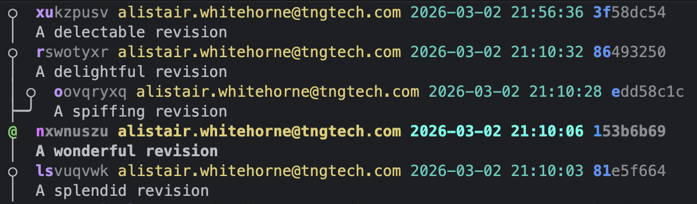
Revisions
Just like commits in Git
The working copy
@
is the current working-copy revision
Revisions have two names
Jujutsu rev hash
Eg xu
Git commit hash
Eg 3f
Immutable revisions
Jujutsu is very rebasey; it often rewrites revisions
Some revisions are considered immutable to protect them from accidental rewrites
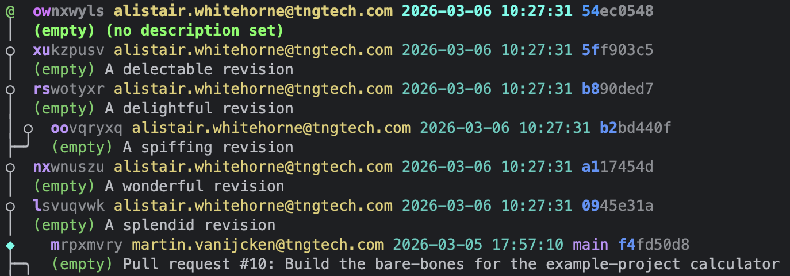
Revsets
What is a revset?
The revset language allows you to reference a set of revisions
Often refers to a single revision, but can also select multiple revisions
Used by many commands to manipulate revisions, using the -r flag
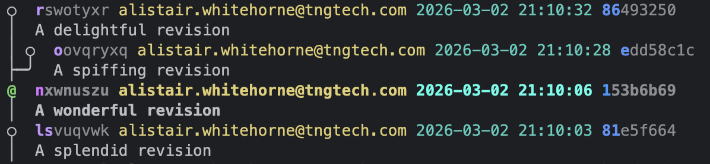
Core revset syntax
@
is the current working-copy revision
Core revset syntax
x-
selects parent(s) of x
repeatable: @--, @---, etc
Example: @-
Core revset syntax
x+
selects child(ren) of x
repeatable: @++, @+++, etc
Example: @+
Core revset syntax
x::
selects all descendants of x
(inclusive)
Example: @::
Core revset syntax
::x
selects all ancestors of x
(inclusive)
Example: ::r
Core revset syntax
x::y
selects revs which are descendants of x and ancestors of y
(inclusive)
Example: ls::r
Non-essential revsets
Just so you know what's out there
x ~ y
selects revs in x but not in y
Also x | y and x & y
all()
selects all revisions
equivalent to ::
heads(x)
selects the "tips of the branches" in x
equivalent to x ~ ::x-
mine()
selects revisions authored by the current user
fork_point(x)
selects the first shared ancestor between the revisions in x
Creating &
navigating
revisions
Creating and navigating
jj log
shows revision history
jj undo
undoes ANY jj command
super OP
jj new
creates a new empty revision on top of @
jj describe
changes the description of @
Aka jj desc
jj edit [rev]
moves @ to rev
Snapshotting
jj snapshots the working copy when you run any jj command
This includes jj log in your watch command
Exercise 1
jj new exercise-one
Exercise one
Check out the branch for exercise-one
- Add descriptions to the commits (target once with relative targetting (
@-), and once with absolute targettingjj desc rhw) - Add a new commit on top of the branch
- Make some changes if you like
- Use
jj editto modify one of your previous commits - Observe that changes are automatically rebased on top of each other
- Try to make a change with
jj editthat conflicts with a later change - Use
jj undoto undo that change
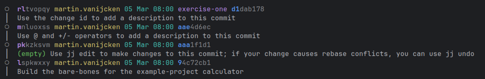
Manipulating
revisions
Manipulating revisions
jj abandon
deletes a rev
jj squash
combines a rev with its parent
jj split
splits a rev into two
jj rebase
moves revs to have different parent(s)
These commands can be used with -r [rev] to specify which rev to manipulate
Exercise 2
jj new exercise-two
Exercise 2
Go to branch for exercise-two.
- Use
jj squashto squash all changes into that change - Use
jj splitto split the head into four commits (multiply, divide, square-root, and power), in that order - Use
jj rebaseto reorder the commits (two branches, one contains divide → multiply → power, the other just the square root commit)- You will need to do a small amount of manual
jj editafter usingjj splitto get the README perfect - In order to minimise rebase conflicts you will want to keep all changes to the README.md in the parent commits
- You will need to do a small amount of manual
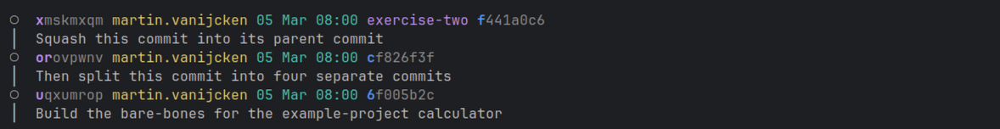
Disaster
recovery
The operation log
jj op log
displays the operation history
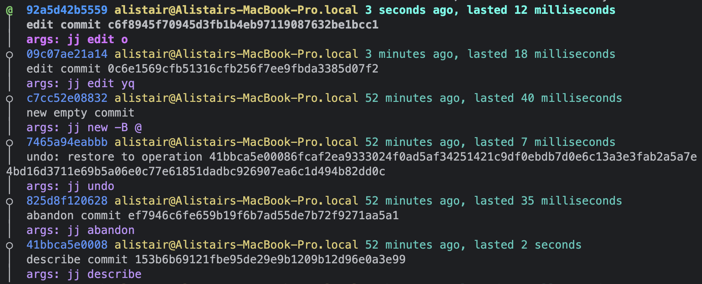
Operation restore
jj op restore [op_id]
restores the entire repo to that state
[op_id] could be 41bbca5e0008
jj undo
restores to the most recent state
Also jj redo
jj op revert [op_id]
reverts the operation [op_id]
Conflicts
A conflict!
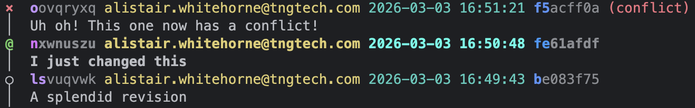
A conflict!
Don't panic
A conflict!
Conflicts do not need to be resolved immediately
Conflicts are checked in
You can have as many conflicts as you like at once…
Resolving conflicts
jj new oon top of the conflicted commit-
Resolve the conflict in your IDE, using the built-in merge resolver
Or usejj resolve, to use Jujutsu's CLI merge resolver
But the IDE experience is much nicer… jj squashinto the conflicted commit
Exercise 3
jj new exercise-three
Exercise 3
- If you made a conflicting state in Exercise 1, try to recover it from the op log
- Otherwise, go to exercise-three branch which is pushed to contain a conflict
- Try resolving it with your IDE and see how this works with IDEs that support git
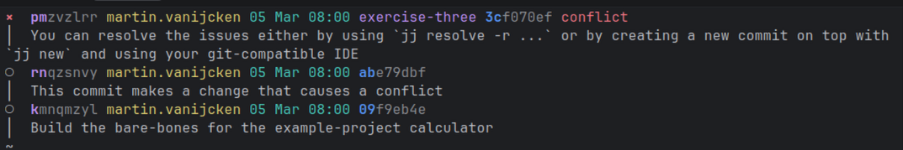
Remotes
Bookmarks
Similar to branches in Git
But they're just a label which points to a revision
jj bookmark set
creates or moves a bookmark
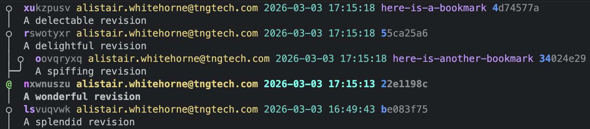
Tracking bookmarks
jj bookmark track [name]
starts tracking a bookmark
[name]@originbecomes[name]- you take ownership of it
- enables this bookmark to be pushed to a remote
Tracked bookmarks
- can be pushed to remotes
- are updated locally if the remote changes
Fetching and pushing
jj git fetch
fetches all bookmarks from the remote
and essentially git pulls all tracked bookmarks
jj git push
pushes bookmarks to the remote
Behaves similarly to git push --force-with-lease
Pushes all bookmarks which are ancestors of @ (see docs)
Exercise 4
jj new main
Exercise 4
- Create a new bookmark with the name of your group pointing to the head of one of the branches you have been working on
- Use
jj bookmark trackon this bookmark to allow pushing to the remote - Push with
jj git push - Someone else can use
jj git fetchto fetch all remote bookmarks - Use
jj log -r ::<bookmark-name>@originto see the commits that are in that remote branch
Even
more?
Quality of life features
jj absorb
squashes changes into their relevant ancestor commits
jj git push --named
creates a bookmark and pushes it
jj commit
is equivalent to jj desc && jj new
jj next --edit
is equivalent to jj edit @+
Also jj prev
Even more useful features
Which we sadly don't have time for today
jj duplicate
creates a duplicate revision
jj workspace add
creates a new workspace
Essentially another full working copy in its own directory
jj config edit
edits the Jujutsu config
Either --user or --repo
jj evolog
shows how a revision has changed over time
Let yourself loose on the CLI reference
Exercise 5
jj new exercise-five
Exercise 5
Use jj absorb in the branch for exercise 5 to absorb changes into parent commits
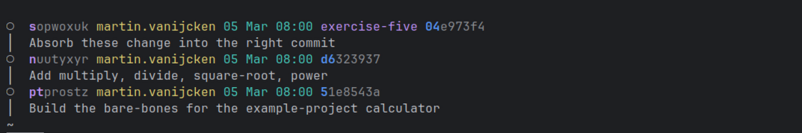
Bonus exercises
Look at the end of ./workshop-plan.md
Bonus exercises
1. Use jj config edit --user to create your preferred set
- Set up a merge editor (
ui.merge-editor, andmergetools.*.program,mergetools.*.merge-args) - Set up a default revset for log
revset.log - Create your own list of private commits (e.g. commits prefixed with "wip:")
- Set up an alias (a useful alias could be `tug` to move a bookmark from child commits to the current commit)
2. Set up a separate workspace of this repository
- Set loose your favourite agent in the separate workspace while you can continue yourself in the main repository
- Add
snapshot.auto-update-stale trueto your config